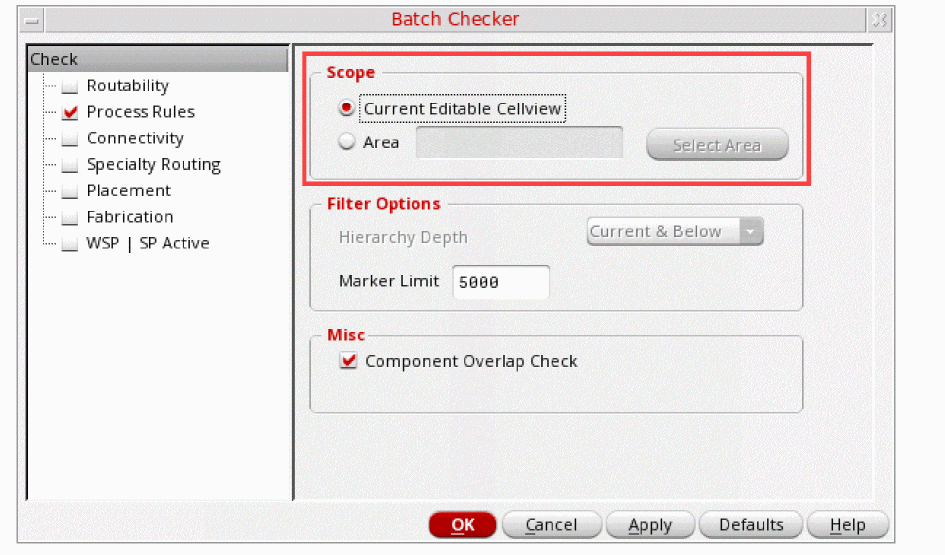
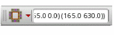
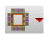

7
Verify the Package
This chapter explains the connectivity, LVS, and DRD checks being done on the layout. When the package layout is modified, you need to verify that the connectivity of the physical implementation is valid. Markers are created to indicate opens and shorts present in the layout. Batch and interactive DRD checks can work with both curvilinear and regular shapes in a package layout. The DRD checker can be used to verify for the constraint violations in a package layout. Both connectivity extractor and DRD checker take into account void shapes.
The chapter includes the following:
Verifying that a design is correct is often the most difficult and yet also the most important aspect of designing a package layout. Additionally, routing paths should be adjusted iteratively until the package is optimized for all constraints. The number of layers depends on power levels and complexity.
For details, refer to
Checking Layout Against Schematic
The development of any design involves an iterative process of synchronizing the differences between the schematic and layout. Changes, especially caused by Engineering Change Orders (ECOs), are made in the schematic and need to be updated in the layout. Similarly, changes in the layout, during interoperability with Cadence SiP Layout, require updating the schematic. To know how to perform these checks in the Virtuoso Layout EXL, refer to
Extracting the Connectivity
Connectivity extraction is needed to update the connectivity in the layout and check that the physical connectivity of a layout matches its logical connectivity. During extraction, markers are created to represent the shorts, opens, and invalid connections. When the layout is modified, interactive extraction is done automatically on modified objects and areas.
Cadence SiP layout requires a valid connections while importing package designs from Virtuoso. For example, a connection between two paths is valid if the end point of one path is overlapping the center line of the other path.
Run the extractor explicitly using the Connectivity – Extract Layout command to update and check the connectivity for the entire package layout. You can view and manage the violation markers in the Connectivity tab of the Annotation Browser assistant.
For details, refer to
Performing DRD Checks
After a layout is imported from Allegro, DRD checks the layout against design rules defined as constraints. DRD performs the checks in Post-Edit and Batch-Check modes.
To perform DRD checks, do the following:
- Click the Post-Edit icon on the Options toolbar to turn on the Post-Edit mode.
- Choose Verify – Design.
-
In the Scope section of the Batch Checker form, define the scope of checking in batch mode.

- In the Marker Limit field, specify the maximum number of post-edit markers to be created per call for the Post-Edit mode.
- Click OK.
Alternatively, you can use the DRD toolbar  to set up the various batch mode options as follows:
- Click the Verify Design button  .
-
Select an option from the drop-down list.
Current Cellview (default) checks all shapes in the current editable cellview.
Select Area checks all shapes in the specified area of the design.
In this case, specify the lower-left and upper-right coordinates for the region in this format:((xlower ylower) (xupper yupper)), for example,((5.2 3.3) (5.7 3.4)),
Supported Constraints
DRD supports the following constraints for verifying a layout.
- pkgMaxBondwireLength
- pkgMinBondwireLength
- pkgMinBondwireSpacing
- pkgMinBondwireWidth
- pkgMinHoleSpacing
- pkgMaxLineWidth
- pkgMinLineWidth
- pkgMinSpacing
Overlap Checking
DRD checks if the PR boundaries of two SMD or die instances placed next to each other overlap. If the Pcell parameter of the instances, flipOverY, is set to nil, they are placed on the top of the board. If the parameter is set to t, the instances are placed on the bottom of the board. In either case, the PR boundaries of the instances must be non-overlapping.
To perform overlap checking, select the Component Overlap Check check box on the Process Rules page of the Batch Checker form. Alternatively, set the drdEditApkDrcComponentOverlap environment variable to t in your .cdsinit or .cdsenv file.
Supported Net Overrides
DRD supports the following net overrides for verifying a layout:
- Net: Set of constraints applied to a net
- Net Group: Set of constraints applied to a group of nets
- Net Class: Set of constraints applied to a mix of nets and net groups
- Net Class-Class: Set of constraints applied between two net classes
For more information on net overrides, see Allegro® Platform Constraints Reference and Allegro® Constraint Manager User Guide.
DRD Region Overrides
DRD supports region overrides for verifying a layout. A layout can have multiple regions, with each region having a separate set of region-specific constraints. All shapes in a region are checked against their own region-specific constraints.
Region-specific constraints override net, design, and foundry constraints. When regions are hierarchical, the constraints of an inner region override the constraints of outer regions.
For more information on net overrides, see Allegro® Platform Constraints Reference and Allegro® Constraint Manager User Guide.
Reporting minSpacing and Short Violations
DRD reports minSpacing and short violations between shapes on top-level nets and shapes on local nets, which are shapes in the hierarchy with no top-level net. However, DRD does not report such violations for a shape on the top-level net in the minSpacing halo around the same top-level pin.
For example, consider an inductor that has pins on nets A and B and its coil shape over net C. DRD reports short violations between the inductor coil shape and all nets at the top level, except when a shape on the top level of net B is within the minSpacing value for pin B. This allows the connection to pin B without DRC violations. DRD reports shorts violations for shapes on net A that are near pin B and for shapes on net B that are near pin A.
Return to top